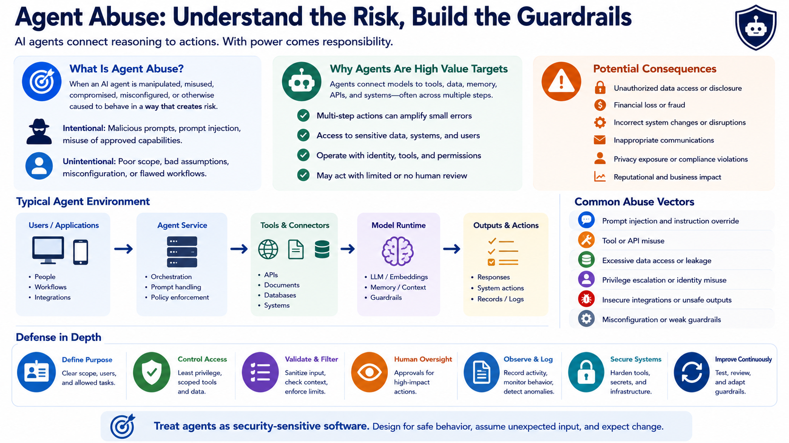

Defending Against Agent Abuse
Understanding Agent Abuse
Connecting to LMS... Progress: in progress
Version 1.0 | Date: 2026-06-21
This course provides educational information regarding defensive security controls for AI agents. It is not offensive security training, exploit development instruction, or legal advice.

Narration
Agent abuse occurs when an AI agent is manipulated, misused, compromised, misconfigured, or otherwise caused to behave in a way that creates security, privacy, operational, or business risk. Abuse can be intentional, such as a person trying to misuse an approved capability, or unintentional, such as a poorly scoped workflow acting on incorrect assumptions. Defenders need to account for both possibilities.
Agents are attractive targets because they can connect model reasoning to tools, APIs, documents, memory, users, and external services. A normal application feature may become higher risk when an agent can perform several steps without a person reviewing each one. The impact is shaped by what the agent can access, what identity it uses, which actions it can perform, and how much human oversight the workflow requires.
Organizational consequences can include unauthorized data access, incorrect system changes, inappropriate communications, financial loss, privacy exposure, service disruption, or decisions made from misleading information. Even a low-impact model error can become serious if the surrounding application gives it broad permissions or treats every output as trustworthy.
Defending against abuse begins by treating the agent as a security-sensitive software system. Teams should define its intended purpose, allowed users, data boundaries, tools, permissions, approval requirements, logging, and safe failure behavior. The goal is not to assume that every user or input is hostile. It is to make sure the system remains controlled when people, content, models, or dependencies behave unexpectedly.